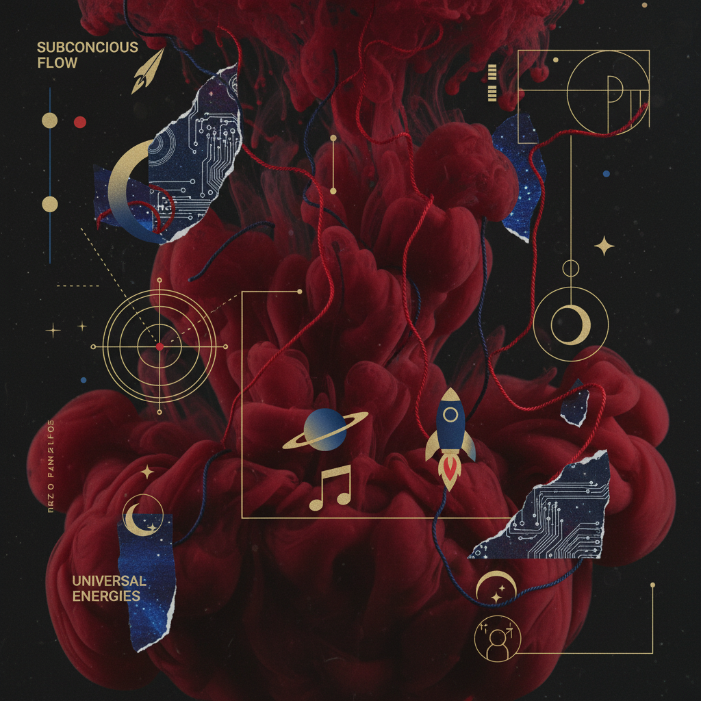
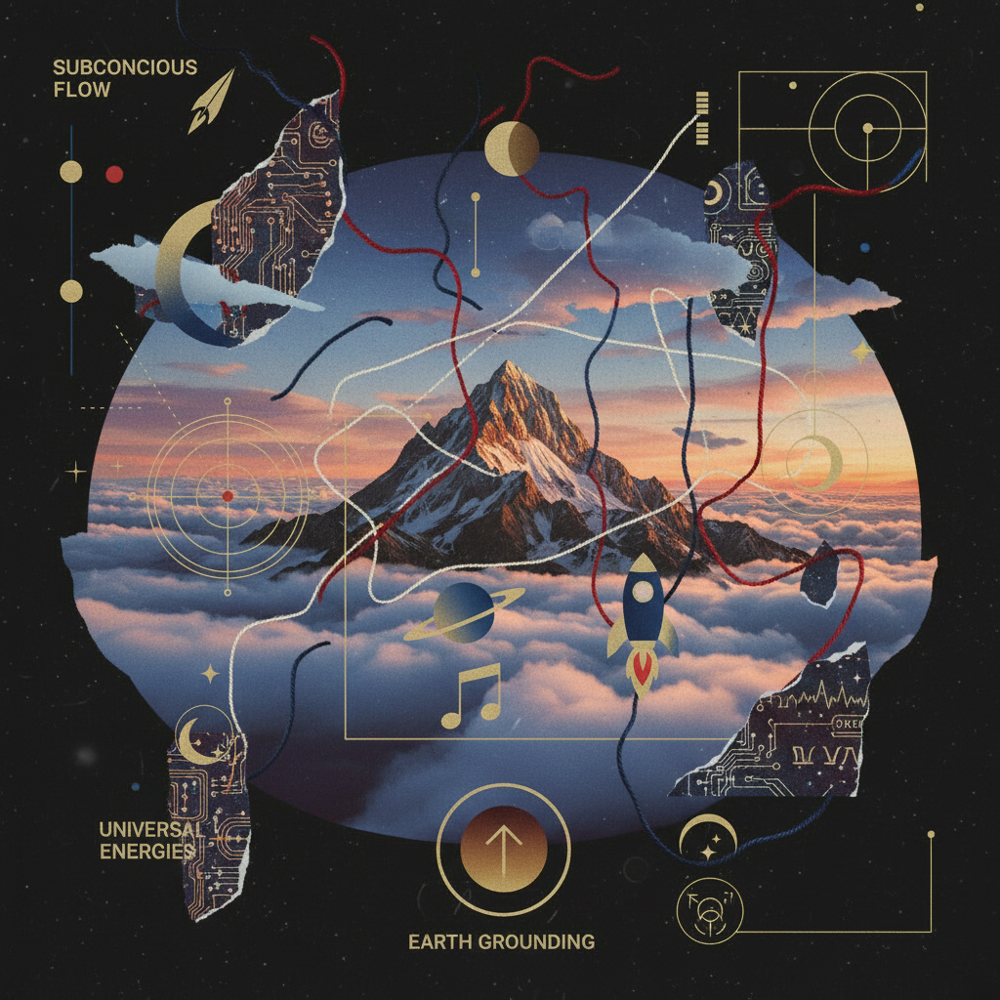

Depth to Root
An examination of the metabolic descent from Scorpio's subterranean waters to the foundational granite of the Taurus New Moon.
- Element Water → Earth
- Alchemical Process Coagulation
- Lunar Gate Scorpio → Taurus
Somatic Correspondences
Hidden Power
Focus: Reproductive Organs & The Pelvic Floor. Accessing the deep reservoir of cellular memory and ancestral vitality stored within the lower gates.

The Voiced Root
Focus: Throat, Neck & Voice. Grounding the intense energy of the depths through the mechanism of expression and the physical vibration of the vocal folds.

The 14-Day Sequential Ledger
Subterranean Survey
Deep inventory of emotional residues. Use the 'Sinking' protocol to identify static in the reproductive meridian.
Practice Domain: Throat Sounding
Harmonizing the bridge between desire and word.
Earth Anchoring
The Final Descent
Archive Research
These prompts require deep physiological listening. Do not rush the ink.
Metadata Note
OBSERVATION: VOICING IS THE FINAL STAGE OF COAGULATION. WHAT IS FELT IN THE WATER MUST BE NAMED ON THE EARTH.
Where in your lower anatomy does the 'unsaid' reside as weight?
Describe the sensation in your vocal folds when acknowledging a difficult truth.
Practice Domain: Crown Breathing
A technique to circulate pelvic heat upward through the spinal column to the crown, then grounding it via the sounding chamber of the throat.